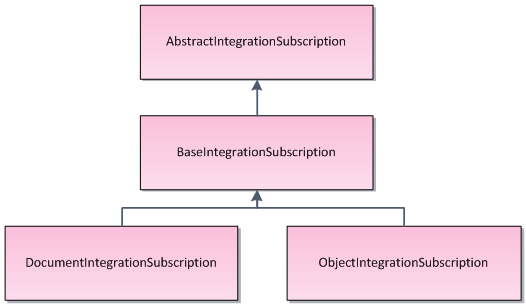
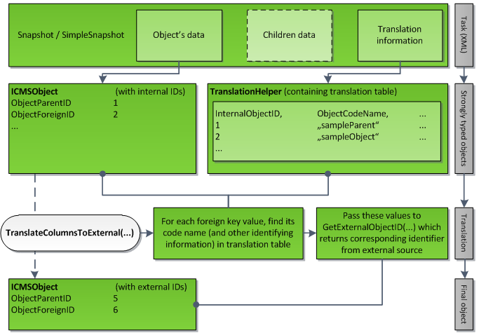

Implementing outgoing synchronization
To synchronize data from Kentico to external applications, you need to decide:
which objects and pages you want to synchronize
which data type you want to use
whether you want to use synchronous or asynchronous processing of integration tasks
whether you want to handle translations of foreign key bindings
Use this information to implement the outgoing synchronization in your connector class:
Prepare subscriptions for the Kentico objects that you want to synchronize:
Use predefined subscription methods - allows you to easily subscribe to objects or pages
ORBuild subscription objects - allows you to select exactly which objects are synchronized
You can create your own subscription class if you need to define custom options for the subscription scope.
Implement the method that converts objects or pages to the objects used by the external application.
(Optional) Implement translation of foreign key bindings:
GetExternalObjectID method - if the synchronized objects or pages have bindings to objects inheriting from BaseInfo
GetExternalDocumentID method - if the synchronized objects or pages have bindings to pages (TreeNode)
Creating subscriptions
Subscriptions keep track of actions that occur in Kentico, such as creating, updating or deleting objects and pages. Use subscriptions to determine the scope of the changes that the connector synchronizes.
You need to implement subscriptions inside the Init() method of your connector class:
using CMS.SynchronizationEngine;using CMS.Synchronization;using CMS.DataEngine;public class CMSIntegrationConnector : BaseIntegrationConnector{ public override void Init() { // Initializes the connector name ConnectorName = GetType().Name; // Register your subscriptions here }}Using predefined subscription methods
You can subscribe to pages or objects by calling the following methods:
SubscribeToAllDocuments
SubscribeToDocuments
SubscribeToAllObjects
SubscribeToObjects
See Reference - Integration bus data types for information about the method parameters.
Examples:
// Subscribes to all types of changes made to user objectsSubscribeToObjects(TaskProcessTypeEnum.AsyncSnapshot, UserInfo.OBJECT_TYPE);// Subscribes to all types of changes made to all pages on all sitesSubscribeToAllDocuments(TaskProcessTypeEnum.AsyncSimpleSnapshot, TaskTypeEnum.All);Building subscription objects
You can select exactly which objects are synchronized using subscription objects:
Create a new object of a subscription class.
Call the SubscribeTo method for the object.
Subscription classes inherit from AbstractIntegrationSubscription, and you can use the following predefined options:
BaseIntegrationSubscription
ObjectIntegrationSubscription
DocumentIntegrationSubscription

The inheritance hierarchy of subscription classes
The subscription classes provide the following filtering options:
BaseIntegrationSubscription
ConnectorName - string; assigns the subscription to a connector. Use the ConnectorName property to enter the name of the current connector.
TaskProcessType - enumeration; specifies the synchronization mode and data type. See TaskProcessTypeEnum for details.
TaskType - enumeration; determines the type of the synchronized action (create, update, delete, etc.). See TaskTypeEnum for details.
SiteName - string; determines the code name of the site where the objects or pages belong. You can use AbstractIntegrationSubscription.GLOBAL_OBJECTS to subscribe only to global objects.
ObjectIntegrationSubscription
ObjectType - string; determines the type of the synchronized object. You can either use the object type value directly (for example cms.user) or system constants (UserInfo.OBJECT_TYPE).
Tip: To find object type values, open the System application in the Kentico administration interface and select the Object types tab.
ObjectCodeName - string; determines the code name of one specific object, for example: administrator
DocumentIntegrationSubscription
DocumentNodeAliasPath - string; determines the alias path of the synchronized pages, for example: /Products/%
DocumentCultureCode - string; determines the culture of the synchronized pages, for example: en-US
DocumentClassName - string; determines the page type of the synchronized pages, for example: CMS.MenuItem
Wildcard character %
You can use the percent character (%) as a wildcard representing any number of characters in the string parameter values.
For example, if you specify the DocumentCultureCode as "en-%", the subscription covers all English cultures: en-US, en-GB, etc.
If you do not want to limit the synchronization scope through one of the properties, set the given value to null in the subscription object's constructor. For the TaskType enumeration, set the All value.
Examples:
// Subscription that synchronizes the creation of object types starting with 'poll.poll' - polls and poll answersObjectIntegrationSubscription objSub = new ObjectIntegrationSubscription(ConnectorName, TaskProcessTypeEnum.AsyncSnapshot, TaskTypeEnum.CreateObject, "DancingGoat", "poll.poll%", null);SubscribeTo(objSub);// Subscription that synchronizes all changes made to pages on 'NewSite', located under the /Home/ path in the content treeDocumentIntegrationSubscription pageSub = new DocumentIntegrationSubscription(ConnectorName, TaskProcessTypeEnum.AsyncSimpleSnapshot, TaskTypeEnum.All, "NewSite", "/Home/%", null, null);SubscribeTo(pageSub);// Subscribes to all changes made to the SETTINGS of a specific custom table, where 'customtable.SampleTable' is the table's code nameObjectIntegrationSubscription customTableSub = new ObjectIntegrationSubscription(ConnectorName, TaskProcessTypeEnum.AsyncSimpleSnapshot, TaskTypeEnum.All, null, null, "customtable.SampleTable");SubscribeTo(customTableSub);// Subscribes to all changes made to the DATA of the 'customtable.SampleTable' custom tableObjectIntegrationSubscription customTableDataSub = new ObjectIntegrationSubscription(ConnectorName, TaskProcessTypeEnum.AsyncSimpleSnapshot, TaskTypeEnum.All, null, CustomTableItemProvider.GetObjectType("customtable.SampleTable"), null);SubscribeTo(customTableDataSub);Creating custom subscription classes
If you need to extend the filtering options of a connector's subscriptions, you can create your own subscription class:
Create a new class inheriting from one of the existing subscription classes.
If you wish to create a completely custom subscription class, we recommend inheriting from AbstractIntegrationSubscription.
If you only wish to add custom filtering for objects or pages, inherit from ObjectIntegrationSubscription or DocumentIntegrationSubscription.
Define any properties and constructors that you need for the custom logic of your subscription class.
Override the IsMatch() method:
publicoverrideboolIsMatch(ICMSObject obj, TaskTypeEnum taskType,refTaskProcessTypeEnum taskProcessType){/* If you are inheriting from ObjectIntegrationSubscription or DocumentIntegrationSubscription,* we recommend calling the IsMatch method of the parent class first:* bool result = base.IsMatch(obj, taskType, taskProcessType)* You can then use additional custom logic to modify the result. *//* Evaluate whether the subscription's properties match the properties of the 'obj' parameter (TreeNode page or BaseInfo object)* and the value of 'taskType'.* Return a boolean value that indicates when objects match the subscription requirements. */}
You can then use the custom subscription class to build subscription objects.
Implementing outgoing synchronization
To synchronize the objects covered by your subscriptions to external applications, you need to override methods inside your connector class:
ProcessInternalTaskAsync for asynchronous processing of integration tasks
ProcessInternalTaskSync for synchronous processing
In all cases, the purpose of the method is to transform the GeneralizedInfo or TreeNode internal object into a corresponding object in the third party system, and perform the action specified by TaskTypeEnum. You also have to take the TaskDataTypeEnum into account. When you are done with the processing, set the error message and return an IntegrationProcessResultEnum value.
For example:
public override IntegrationProcessResultEnum ProcessInternalTaskAsync(TreeNode node, TranslationHelper translations, TaskTypeEnum taskType, TaskDataTypeEnum dataType, string siteName, out string errorMessage){ // Convert the TreeNode to an external page object // Optional: Translate foreign key values // Send the data to the target application // Method result for successful processing errorMessage = null; return IntegrationProcessResultEnum.OK;}The synchronous and asynchronous versions of the methods work in the same way. The only difference is that you cannot use the TranslateColumnsToExternal method to translate foreign key values inside the ProcessInternalTaskSync method. If you wish to translate foreign keys with synchronous processing, you need to manually write the translation code.
Processing child object data
When using asynchronous processing for tasks with the Snapshot data type, the task data includes both the main object and any child objects. Within the ProcessInternalTaskAsync method, you can access collections of child objects via the Children property of the GeneralizedInfo parameter.
The following example demonstrates how to correctly get the main object and its child objects within the ProcessInternalTaskAsync method (the example processes Order objects and child items within the order).
using System.Linq;using System.Collections.Generic;using CMS.DataEngine;using CMS.Ecommerce;using CMS.Synchronization;using CMS.SynchronizationEngine;public override IntegrationProcessResultEnum ProcessInternalTaskAsync(GeneralizedInfo infoObj, TranslationHelper translations, TaskTypeEnum taskType, TaskDataTypeEnum dataType, string siteName, out string errorMessage){ // Runs when processing Snapshot type tasks for order objects if (infoObj.TypeInfo.ObjectType == OrderInfo.OBJECT_TYPE && dataType == TaskDataTypeEnum.Snapshot) { // Gets the parent order object OrderInfo order = infoObj.MainObject as OrderInfo; // Gets a List of the order's OrderItemInfo child objects List<OrderItemInfo> orderItems = order.Children .FirstOrDefault(child => child.ObjectType == OrderItemInfo.OBJECT_TYPE)? .Cast<OrderItemInfo>() .ToList(); // Convert the data to external objects // ... } // Send the data to the target application // Method result for successful processing errorMessage = null; return IntegrationProcessResultEnum.OK;}Sending data to the target application
Once you have converted the object or page to an external equivalent, there are several ways to synchronize the data with the target system:
Call the API of the external system (you need to add references to the required namespaces).
Use CMSConnectionScope and GeneralConnection and perform a query against the external database.
Push the data to an external endpoint in a format that the target system can process. For example, the endpoint can be represented by a web service in the external system.
You can use any other approach, but you always need to be able to determine whether the processing succeeded on the external side. Both the ProcessInternalTaskAsync and ProcessInternalTaskSync methods must return the result status.
Translating foreign keys to match external objects
The values of identifier columns may not always be the same for equivalent objects in Kentico and external systems. For subscriptions using the SimpleSnapshot or Snapshot data type and asynchronous processing, you can ensure consistency by translating the columns that store foreign key bindings to related objects.
To perform the translation, call TranslateColumnsToExternal inside your connector's ProcessInternalTaskAsync method. The TranslateColumnsToExternal method is inherited from BaseIntegrationConnector and accepts the following parameters:
TranslateColumnsToExternal(GeneralizedInfo infoObj, TranslationHelper translations, bool processChildren)TranslateColumnsToExternal(TreeNode node, TranslationHelper translations, bool processChildren)The last parameter determines whether to translate foreign keys of child objects. For the SimpleSnapshot data type, always pass false. The processChildren parameter is useful when using the Snapshot data type, for example when you are processing an object that does not exist in the target system yet, and you do not have enough information to translate the foreign keys of child objects before you process the main object. We recommend using the following translation order:
Call TranslateColumnsToExternal(infoObj, translations, false).
Process the main object (send the data to the target system).
Call TranslateColumnsToExternal(infoObj, translations, true).
Iterate through the Children collection of infoObj and process each object.
To ensure correct translation functionality, you need to override one or both of the following methods inside your connector class:
GetExternalObjectID - implement if the synchronized objects or pages have bindings to objects inheriting from BaseInfo
GetExternalDocumentID - implement if the synchronized objects or pages have bindings to pages (TreeNode)

Diagram of the column translation process
GetExternalObjectID method
Override the GetExternalObjectID method inside your connector class if you call TranslateColumnsToExternal for objects or pages that have references to other objects inheriting from BaseInfo.
public override int GetExternalObjectID(string objectType, string codeName, string siteName, string parentType, int parentId, int groupId)Parameters:
objectType - identifies the type of the synchronized internal object (class). For example, cms.user can match external objects such as "person" or "member".
codename - the unique identifier of the synchronized object.
siteName - the code name of the site where the object belongs (only for site-related objects).
parentType - the type of the object's parent (if the object has a parent).
parentId - the ID of the object's parent.
groupId - the identifier of the object's group (if the object belongs to a group).
Use the parameters to find the corresponding object in the external system and return the given object's identifier (integer value).
GetExternalDocumentID method
Override the GetExternalDocumentID method inside your connector class if you call TranslateColumnsToExternal for objects or pages that have references to other pages (TreeNode).
public override int GetExternalDocumentID(Guid nodeGuid, string cultureCode, string siteName, bool returnDocumentId)Parameters:
To learn how Kentico stores pages in the database, refer to Page database structure.
nodeGuid - the page's GUID identifier.
cultureCode - the culture code of the page's language (for example en-US).
siteName - the code name of the site where the page belongs.
returnDocumentId - indicates which identifier you need to provide as the method's return value. If true, return the DocumentID, otherwise return the NodeID. The NodeID is an identifier of a tree node including all language versions, while DocumentID is unique for each language version.
Identifier
Alternative identification
Shared page data
NodeID
nodeGuid & siteName
Culture version of a page
DocumentID
nodeGuide & siteName & cultureCode
Use the parameters to find the corresponding page in the external system and return the given page's identifier (integer value).
Translating foreign keys in synchronous mode
If you need to translate ID column values to match external objects, we recommend using asynchronous processing. In synchronous mode, the only way to translate columns is to write custom code inside the ProcessInternalTaskSync method.
The following sample code indicates how to translate the identifier of a page's parent:
using CMS.DocumentEngine;using CMS.Membership;public override IntegrationProcessResultEnum ProcessInternalTaskSync(TreeNode node, TaskTypeEnum taskType, string siteName, out string errorMessage){ ... // Gets the Kentico parent node of the synchronized page TreeProvider tree = new TreeProvider(MembershipContext.AuthenticatedUser); TreeNode parentNode = DocumentHelper.GetDocument(node.NodeParentID, tree); // Gets the properties of the parent node Guid parentGuid = parentNode.NodeGUID; string parentSiteName = parentNode.NodeSiteName; int newParentId = 0; // External code that finds the matching external page according to the parentNode properties, and fills the newParentID // Assigns the new parent ID to the synchronized page node.NodeParentID = newParentId; ...}